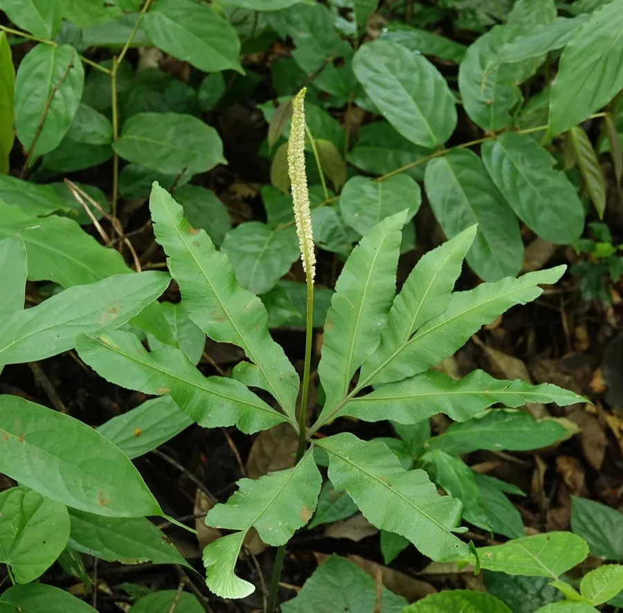

蕨类与裸子植物 · 植物界
七指蕨 Helminthostachys zeylanica

瓶尔小草科七指蕨属陆生蕨类，叶片掌状分裂成七枚指状羽片，形似张开的手掌，是珍稀的孑遗蕨类与国家二级保护植物。
- 分类
- 门蕨类植物门纲瓶尔小草纲目瓶尔小草目科瓶尔小草科属七指蕨属
- 栖息环境
- 海拔 500 米以下的林下阴湿处与溪边，喜高温湿润半阴
- 地理分布
- 中国广东、广西、海南、云南、台湾；印度、斯里兰卡、东南亚、澳大利亚
- 保护级别
- 国家二级重点保护野生植物；IUCN 暂无评估
物种志
七指蕨为瓶尔小草科七指蕨属陆生蕨类，植株高三十至五十厘米，根状茎粗壮、横走，密被肉质根。叶片掌状分裂，具七枚（有时五至九枚）指状羽片，羽片披针形，革质，表面深绿，叶柄基部膨大。孢子囊穗单生，从叶柄基部抽出，圆柱形，孢子期夏秋季。
七指蕨分布于中国广东、广西、海南、云南、台湾等地，印度、斯里兰卡、东南亚、澳大利亚也有，多生于海拔五百米以下的林下阴湿处和溪边。它喜高温湿润和半阴环境，适宜疏松肥沃、排水良好的酸性土壤，不耐寒。叶片掌状如七指，形态奇特，是研究蕨类演化的重要材料；根状茎在民间入药，有清热解毒之效。由于野生种群稀少，被列为国家二级重点保护野生植物。
形态与习性
- 株高30–50 cm，根茎粗壮
- 叶形掌状分裂成七枚羽片
- 孢子期夏秋季，囊穗圆柱形
- 光照喜半阴，忌强光
- 水分喜湿润，常生于溪边
- 土壤疏松肥沃的酸性土
- 主要用途珍稀观叶、根茎入药
趣味知识
- 七指蕨的叶片掌状分裂成七枚指状羽片，像一只张开的手掌。
- 它的孢子囊穗从叶柄基部抽出，与叶片分开生长，形态独特。
- 七指蕨属仅此一种，是瓶尔小草科中较为原始的类群。